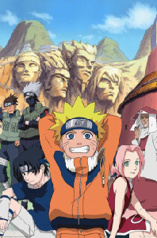
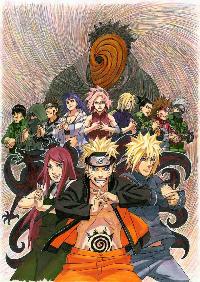
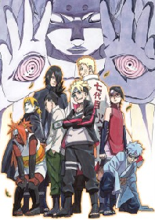

Naruto
12 évvel ezelőtt egy hatalmas démon, Kyuubi, a kilenc farkú róka tartotta rettegésben Avarrejteket, óriási pusztítást végezve. Hogy a veszélynek véget vessen, a falu vezetője, a negyedik Hokage feláldozta az életét, és a démont egy újszülött kisfiú, Naruto testébe zárta. Az évek múlásával Naruto hiperaktív, keményfejű ninjává nőtt fel, ám a környezete kitaszítja, hiszen a felnőttek még emlékeznek a benne rejtőző démon pusztítására. A tiszteletért és elismerésért vívott küzdelme során pedig nem csak jó barátokat, de halálos ellenségeket is szerez.
Shippuuden Naruto
Eltelt három év, az edzés végére érve, Naruto és Jiraiya visszatérnek Konohába. Az eltelt idő alatt nem csak Naruto, de a barátai is megerősödtek, mi több immáron mindannyian megkapták a Chuunin rangot, mi több, megtudjuk, hogy időközben Gaara lett az új Kazekage.
Mivel Naruto visszatért utazásaiból, az Akatsuki is mozgolódni kezd, hogy megvalósítsák világhódító terveiket és összegyűjték a Bijuu-kat, kezdve az Ichibi-vel. Ennek fényében Konoha rövidesen üzenetet kap Sunától, hogy a Kazekagét elrabolták. Tsunade nyomban el is küldi a hetes csapat megmaradt három tagját, hogy keressék meg az Akatsuki rejtekhelyét és mentsék meg Gaara-t.
A későbbiekben pedig folytatódik a Sasuke utáni hajtóvadászat is, valamint megkezdődnek a harcok az Akatsuki-val szemben.
Boruto
Konoha újra a láthatáron! Ám ezúttal Uzumaki Naruto nagyobbik gyermeke, Boruto barangol a faluban és kavarja a zűrt ott, ahol nem is számítanánk rá. Az új generáció tagjait szépen, lassan megismerjük, egészen a Ninja Akadémiára való bekerülésüktől fogva. Azonban, elővetít e sorozat számunkra egy sokkal nagyobb eseményt: Konoha romokban hever, Boruto pedig immár képzett harcosként száll szembe számunkra ismeretlen ellenfelével, Kawakival. Hogyan fajulhatnak idáig a dolgok?
